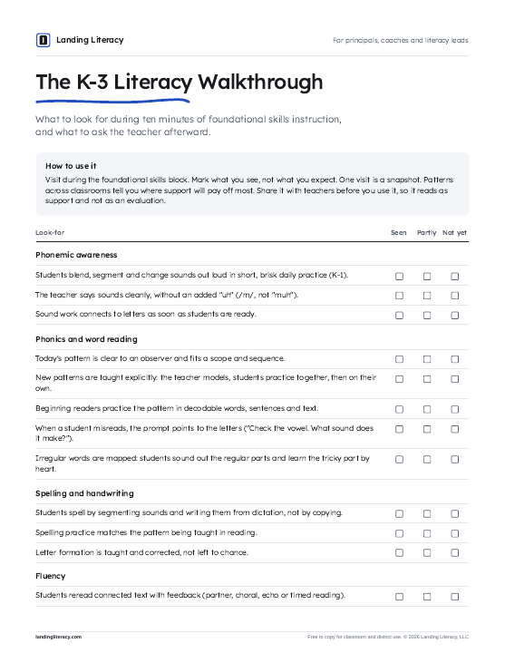
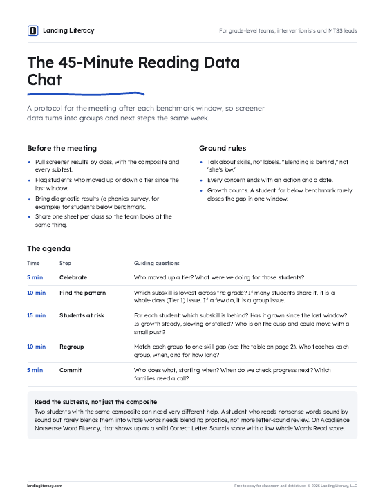
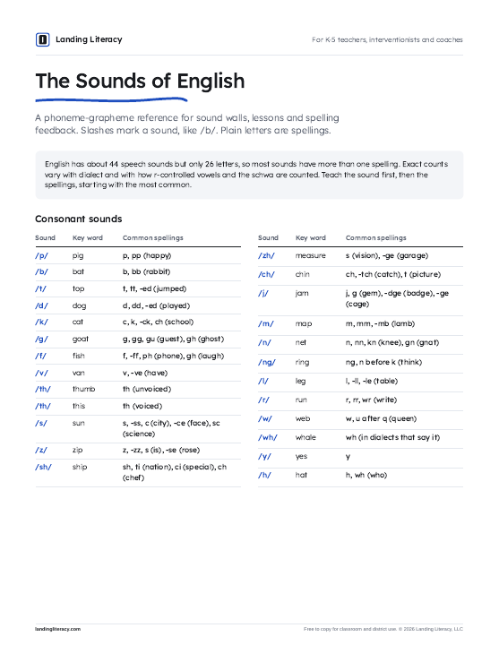
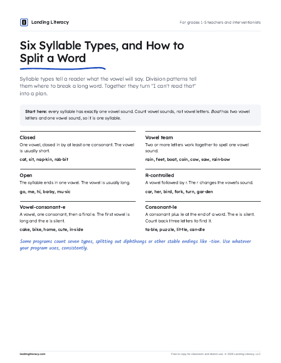
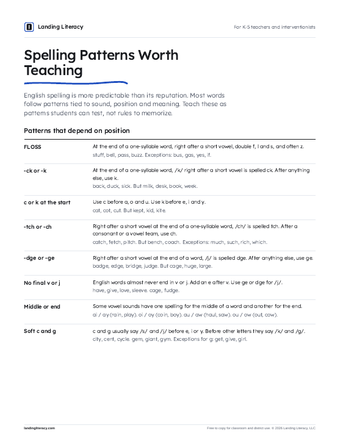
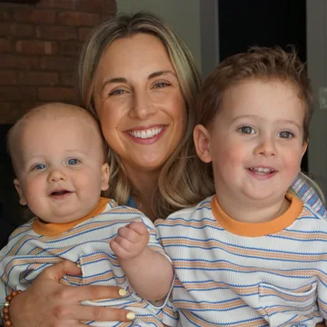

Foundational Reading PD
Phonemic awareness, phonics, spelling and morphology PD teachers can use the next morning.
Carly Mulvey helps K-5 teams move from research to reality, with coaching, data and curriculum support that lasts past the PD day.
Districts across the region are moving to evidence-based reading instruction. The research is clear on what to teach. The hard part is the week after the training.
Landing Literacy stays for the part that matters: in classrooms, in data meetings and in the plan for next year.
Six kinds of support, mixed to fit what your district already has.
Phonemic awareness, phonics, spelling and morphology PD teachers can use the next morning.
Train your team on the screener, turn diagnostic data into intervention groups, and set up the progress monitoring and I&RS routines that keep groups moving.
Scope and sequence, pacing guides, literacy block structure, standards crosswalks, and report-card rubrics that match what's taught.
Evaluate options, run pilots, then launch the program you choose with training, demo lessons and year-one check-ins.
Plan, model, debrief. Demo lessons in real classrooms, data chats, and grade-level team meetings in person or virtual.
Pacing guides, intervention binders and decodable text guides built around your program, plus Make-and-Take sessions where teachers leave with materials in hand.
K-2 foundational skillsGrades 3-5 morphology and curriculum
Join at any point in the year. This is the rhythm most partnerships settle into.
Summer
Grade-level curriculum sessions: pacing guides, literacy block, report-card rubrics, standards crosswalks, and classroom setup like sound walls and libraries sorted by topic.
Fall
Screener and program training before day one. Then demo lessons, diagnostic surveys, first intervention groups and beginning-of-year data chats.
Winter
Middle-of-year data chats by grade: who jumped a tier, who slipped, which subskill is behind. Then regroup, model small groups and tighten I&RS plans.
Spring
End-of-year data, program pilots, curriculum revisions and next year's plan, built with the teachers who'll teach it.
Most of the day happens in classrooms, not a conference room. Here's one example.
Built around preps, grade-level meetings and push-in time, so you need fewer subs.
Ten quick questions, about two minutes. You'll get a fit rating, your three biggest opportunities, and the scores Carly would track with you.
Answer for your district as it is today. There are no wrong answers, and nothing is sent anywhere unless you choose to share your results.
A fit ratingFrom strong fit to light-touch, with an honest "not right now" if that's the answer.
Your top three opportunitiesRanked, with what the work would look like.
The scores to watchThe measures Carly would track with you to show it's working.
I am humbled to work with so many outstanding teachers and leaders and I count you among the very best. We are very fortunate to have you in such an important and critical role.
You took the time to not only listen to the mom, but you made her feel that her input was valued. You answered all of her questions with precision and facts. I feel very fortunate to have you on our team! Your expertise is truly valued and appreciated!!
I always walk away with so much knowledge each time we work with you!
You made me feel SO much better about teaching Fundations. I look forward to working with you again soon!
Thank you for helping me out all of the time with data and taking the time to explain!
We are so proud of how far he's come and we have definitely noticed a difference at home when he's reading.
She has really come so far and I see the progress.
One partnership, year by year. References are available on request.
Heggerty and Acadience training before the first day. Demo lessons in K and grade 1 classrooms. Core Phonics Survey into UFLI intervention groups. Beginning- and middle-of-year data chats by grade. Spring curriculum revisions against the new NJ ELA standards.
K-5 pacing guides and report-card rubrics, Fundations training for grade 3, morphology for grades 4-5, I&RS and Child Study Team training, and pilots of new core programs.
Rollout of a new K-5 core curriculum with demo lessons and debriefs, Morpheme Magic for grades 4-5, and an intervention binder for every teacher.
Program training, data analysis days and curriculum check-ins, on the calendar now.
The district has brought Carly back every year since 2023.
I've taught kindergarteners their very first sounds and coached district teams through brand-new curricula. The goal has never changed: every child reading.
I began in kindergarten and first grade classrooms, became a literacy specialist, and then served as a regional coach with NJTSS-ER at Rutgers, supporting early literacy work across 24 New Jersey districts. In 2022-23 I was named Teacher of the Year at Lincoln Elementary in Pompton Lakes.
In 2023 I started partnering with districts directly, first as Structured Literacy Solutions and now as Landing Literacy. I still do my best work in classrooms, right next to teachers.
I believe every child can learn to read, and every child deserves a teacher who knows how to teach them.
We know how to teach reading. The research has been clear for decades. The hard part is getting it into every classroom, every day, and that's exactly where teachers get left on their own.
I started in a kindergarten classroom, so I know what teachers are up against. I also know what happens when someone stays: teachers grow confident, groups start moving, and kids who were stuck begin to read.
That moment is why I do this work.
Practical tools Carly uses with teams. Free to download, print and share with your school.

What to look for in ten minutes of foundational skills instruction, and what to ask afterward.
Download
A meeting protocol that turns benchmark data into groups and next steps the same week.
Download
Every consonant and vowel sound with key words and common spellings, ready for a sound wall.
Download
The six types, six division patterns and a routine students can run on their own.
Download
Thirteen reliable English spelling patterns, with examples and the exceptions to expect.
DownloadAll five resources in one printable PDF.
Download all fiveWith districts across New Jersey, New York, Connecticut and Pennsylvania. Full days on site, plus short virtual team meetings between visits.
K-5. Foundational skills in K-2, plus morphology, fluency and curriculum in grades 3-5.
Heggerty, Fundations, UFLI, Acadience, Core Phonics Survey, The 95% Group, Morpheme Magic and Arts & Letters.
Yes. Carly helps teams evaluate options, run pilots, and launch the program you pick.
Throughout the school year, plus summer planning sessions.
A school year is the usual unit: a set number of on-site days, plus summer planning. Work can continue year to year as programs mature.
Yes. Most work starts with the program you already own: filling its gaps, pacing it, and coaching teachers to teach it well.
Often less than you'd think. Sessions are built around preps, grade-level meetings and push-in time, and Carly plans coverage with you.
Yes. Literacy screening training for Child Study Teams, I&RS procedures and goals, and planning with resource room teachers.
Yes. A W-9 is available on request.
Tell Carly a little about your district. She'll reply to you directly.

You'll hear back from Carly herself.
Carly has your note and will reply to the email you gave. While you wait, the free resources above are yours.